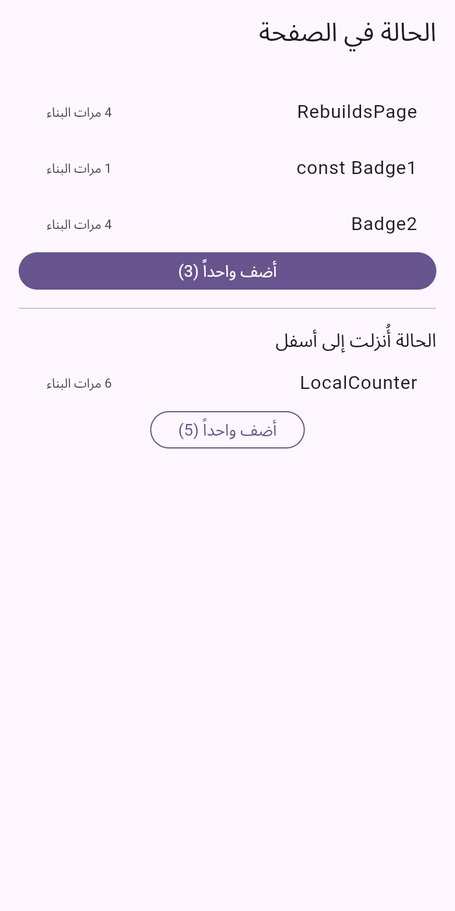
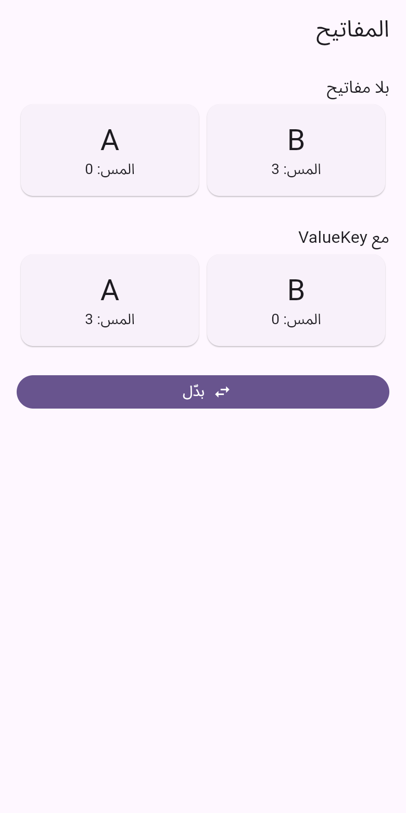

الفصل 1
كيف يرسم Flutter فعلاً
ستتعلم في هذا الفصل أن
- ترى الأشجار الثلاث خلف كل شاشة: الـ Widgets، والعناصر (elements)، وكائنات الرسم (render objects)
- تتبع إطاراً واحداً من
setStateإلى النقاط على الشاشة، وتعرف كلفة كل خطوة - تتوقع أي الـ Widgets يُعاد بناؤها، وتُبقي عددها صغيراً بـ
constوالحالة المحلية - تقرأ التخطيط بجملة: «القيود تنزل، والمقاسات تصعد، والأب يحدد الموضع»
- تستخدم المفاتيح لتبقى الحالة حيث يجب، وحدود إعادة الرسم ليبقى الرسم رخيصاً
- تثبت كل ذلك باختبارات تعدّ مرات البناء ومرات الرسم
في الكتاب الخامس كتبت الـ Widgets ورسمها Flutter. وكان هذا كافياً لبناء التطبيقات. لكنه لا يكفي لتعرف لماذا تتقطع قائمة، ولماذا يفقد حقل نص ما كُتب فيه حين تتغير الشاشة، ولماذا يتجاهل Widget العرض الذي أعطيته. وللثلاثة جواب واحد: ما يفعله Flutter بالـ Widgets بعد أن تعيد build. وهذا الفصل يفتح الصندوق، وكل ادعاء فيه يقيسه اختبار.
بِت
لا شيء في هذا الفصل قاعدة تقريبية. كل رقم، من مرات البناء إلى مرات الرسم، عدّته الاختبارات التي ستراها، على الجهاز الذي صنع الكتاب. غيّر الكود، وشغّل الاختبارات، وشاهد الأرقام تتغير.
1.1 ثلاث أشجار
الـ Widget ليس ما تراه على الشاشة. إنه وصف: كائن صغير لا يتغير يقول ما يجب أن يكون هناك. ويحتفظ Flutter بشجرتين أخريين بجانب الـ Widgets:
- الـ عنصر (element) مكان الـ Widget في الشجرة الحية. يُنشأ مرة واحدة، ويحفظ موضعه، ويحمل الـ
Stateالخاصة بالـ Widget ذي الحالة، ويُعاد استخدامه حين يصل Widget جديد من النوع نفسه إلى المكان نفسه. - وكائن الرسم (render object) يقوم بالعمل الحقيقي: يقيس نفسه، ويضع أبناءه، ويرسم. ولبعض الـ Widgets فقط كائن رسم.
يستطيع اختبار أن يمر على عناصر شاشة صغيرة ويطبع الثلاثة، سطراً لكل عنصر:
final root = tester.element(find.byType(Directionality)); void show(Element e, int depth) { // RenderObjectElement وحده يملك كائن رسم؛ والباقي يبني Widgets فقط. final ro = e is RenderObjectElement ? '${e.renderObject.runtimeType}' : '-'; debugPrint( '${' ' * depth}${e.widget.runtimeType} | ${e.runtimeType} | $ro', ); e.visitChildren((child) => show(child, depth + 1)); } show(root, 0);
$ flutter test test/trees_test.dart 00:00 +0: loading test/trees_test.dart 00:00 +0: الأشجار الثلاث لشاشة صغيرة Directionality | _UbiquitousInheritedElement | - Center | SingleChildRenderObjectElement | RenderPositionedBox Padding | SingleChildRenderObjectElement | RenderPadding Text | StatelessElement | - RichText | MultiChildRenderObjectElement | RenderParagraph 00:00 +1: All tests passed!
CenterوPaddingرقيقان: لكل منهما عنصر وكائن رسم يخطط لابن واحد.- و
Textبلا كائن رسم. إنهStatelessWidgetيبنيRichText، وRichTextهو صاحبRenderParagraphالذي يقيس الحروف ويرسمها. وأكثر الـ Widgets التي تستخدمها مثلText: لا تفعل إلا بناء Widgets أخرى. - و
Directionalityبلا كائن رسم أيضاً: إنه Widget موروث (inherited widget) يمرر قيمة إلى الأسفل، كما يفعلThemeوMediaQuery.
1.2 إطار واحد
شاشة الجوال تطلب صورة جديدة 60 أو 120 مرة في الثانية. ولكل صورة يملك Flutter نحو 16 أو 8 أجزاء من الألف من الثانية، ويقوم بالخطوات نفسها بالترتيب:
- الحركة. كل حركة جارية تنتقل إلى قيمتها في هذه اللحظة.
- البناء. كل عنصر مُعلَّم بأنه متسخ (dirty)، بـ
setStateأو بتغير قيمة موروثة، تُنفَّذ دالةbuildفي الـ Widget الخاص به، وتُقارن الـ Widgets الجديدة بالقديمة. - التخطيط. كائنات الرسم التي ربما تغيّر مقاسها تقيس نفسها وتضع أبناءها.
- الرسم. كائنات الرسم التي تغيّر شكلها تسجّل ما يجب رسمه، في طبقات.
- التركيب والتنقيط. تذهب الطبقات إلى خيط الـ GPU، فيحولها إلى نقاط بينما يُبنى الإطار التالي.
وكل خطوة لا تلمس إلا ما تغيّر. فالإطار الذي لم يتغير فيه شيء لا يكلّف شيئاً تقريباً؛ والإطار الذي تغيّر فيه كل شيء قد يفوته موعده، فيرى الشخص تقطعاً يسمى jank. وباقي هذا الفصل عن إبقاء «ما تغيّر» صغيراً في كل خطوة.
1.3 من يُعاد بناؤه
setState تعلّم عنصراً واحداً بأنه متسخ. وفي الإطار التالي يُبنى الـ Widget الخاص به من جديد، فيعيد Widgets أبناء جديدة. ولكل ابن يقارن Flutter الـ Widget الجديد بالقديم في المكان نفسه:
- إن كان الكائن نفسه، فلا يمكن أن يكون شيء تحته قد تغيّر: فيتخطاه Flutter كله. وهذا ما تعطيك إياه
const: فالـ Widget الثابت يُنشأ مرة واحدة، حين يُترجم التطبيق، وهو الكائن نفسه في كل بناء. - وإن كان كائناً مختلفاً من النوع نفسه (وبالمفتاح نفسه)، بقي العنصر وحُدّث، وبُني الابن من جديد.
- وإن اختلف النوع أو المفتاح، رُمي العنصر القديم وكل ما تحته، وأُنشئ جديد.
الصفحة التالية تعدّ مرات بناء كل Widget على الشاشة نفسها. تُغيَّر حالة الصفحة ثلاث مرات بالزر الممتلئ، وحالة Widget أصغر خمس مرات بالزر ذي الإطار:
// const: الكائن نفسه في كل مرة، فيتخطاه Flutter. const Badge1(), // بلا const: كائن جديد مع كل بناء لأبيه، فيُبنى من جديد. Badge2(), FilledButton( onPressed: () => setState(() => count++), child: Text('أضف واحداً ($count)'), ), const Divider(height: 32), Text( 'الحالة أُنزلت إلى أسفل', style: Theme.of(context).textTheme.titleMedium, ), const LocalCounter(),

$ flutter test test/rebuilds_test.dart 00:00 +0: loading test/rebuilds_test.dart 00:00 +0: setState تعيد بناء الـ Widget وكل جديد تحته {page: 4, const: 1, plain: 4, local: 6} 00:00 +1: All tests passed!
- بُنيت الصفحة أربع مرات: مرة في البداية، ومرة مع كل واحدة من استدعاءات
setStateالثلاثة. - وبُني
const Badge1()مرة واحدة. فالصفحة أعادت الكائن نفسه في كل مرة، فلم يطلب منه Flutter البناء ثانية أبداً. - وبُني
Badge2()أربع مرات مثل أبيه، مع أن شيئاً فيه لم يتغير: فالكائن الجديد Widget جديد. - وبُني
LocalCounterست مرات: مرة في البداية، ومرة مع كل واحد من استدعاءاتsetStateالخمسة الخاصة به. ولم تُعد هذه الخمسة بناء الصفحة ولا الشارتين: فالحالة التي تعيش منخفضة في الشجرة لا تعيد إلا بناء ما تحتها.
1.4 القيود تنزل، والمقاسات تصعد
التخطيط في Flutter مرور واحد إلى أسفل الشجرة ثم العودة. يعطي الأب كل ابن قيوداً (constraints): عرضاً وارتفاعاً أدنى وأقصى. ويختار الابن مقاسه داخلها، ويخبر أباه. ثم يقرر الأب أين يضع الابن. وثلاث جمل تشرح كل مفاجأة في التخطيط:
القيود تنزل. والمقاسات تصعد. والأب يحدد الموضع.
وWidget صغير يجعل القيود مرئية: فـ LayoutBuilder يعطي دالته القيود التي تلقّاها.
String describe(BoxConstraints c) { String range(double min, double max) => min == max ? min.toStringAsFixed(0) : '${min.toStringAsFixed(0)}–${max.isFinite ? max.toStringAsFixed(0) : '∞'}'; return 'w ${range(c.minWidth, c.maxWidth)} h ${range(c.minHeight, c.maxHeight)}'; } // يعرض القيود التي تلقّاها هذا المكان من أبيه. class ConstraintsLabel extends StatelessWidget { const ConstraintsLabel({super.key}); @override Widget build(BuildContext context) { return LayoutBuilder( builder: (context, constraints) => ColoredBox( color: Theme.of(context).colorScheme.primaryContainer, child: Padding( padding: const EdgeInsets.all(8), child: Text(describe(constraints), textDirection: TextDirection.ltr), ), ), ); } }

SizedBoxبمقاس 300 × 56 يعطي قيوداً صارمة (tight): الأدنى يساوي الأقصى، ولا خيار للابن.- و
Centerيرخيها: أي شيء من الصفر حتى مقاس الصندوق. فتأخذ اللافتة ما يحتاجه نصها فقط، ويضعهاCenterفي المنتصف. - و
Expandedيعطي الابن العرض الباقي في الصف بالضبط، وارتفاع الصف بلا حد:0–∞. - و
ListViewالعمودية تعطي أبناءها ارتفاعاً بلا حد، لأن القائمة تتمرر. ولهذا يفشلColumnفيهExpandedداخلListView: فـ«أطول ما يمكن» لا جواب له حين يكون الأقصى بلا نهاية. - والأخير يطلب عرض 100، فيأخذ 300. فـ
Container(width: 100)أمنية، وقيود أبيه الصارمة تغلب. ولتجعله بعرض 100 أرخِ القيود أولاً، بـCenterأوAlign.
1.5 المفاتيح: أي عنصر هو أيّها
يُبقي Flutter العنصر حين يكون للـ Widget الجديد في مكانه النوع نفسه والمفتاح (key) نفسه. وبلا مفاتيح يعني «مكانه» ترتيبه بين إخوته. وهذا صحيح عادة، ويفشل بالضبط حين يتحرك إخوة من النوع نفسه. الصفحة التالية فيها صفان من البطاقات ذات الحالة، أحدهما بلا مفاتيح والآخر بـ ValueKey لكل حرف، وزر يبدّل الحرفين:
// بلا مفتاح: بعد التبديل تبقى كل State في موضعها. Row(children: [for (final l in labels) Tile(label: l)]), const SizedBox(height: 24), Text('مع ValueKey', style: Theme.of(context).textTheme.titleMedium), // مع مفتاح: كل State تتبع الـ Widget الخاص بها. Row( children: [ for (final l in labels) Tile(key: ValueKey(l), label: l),


في الصف الأول انتقل الحرفان، لكن العدّين بقيا مكانهما: فصار B يعرض لمسات A الثلاث. فكل عنصر قارن الـ Widget الجديد في موضعه، فوجد Tile كما كان، فأبقى الـ State الخاصة به. وفي الصف الثاني وجد كل مفتاح عنصره أينما انتقل، فذهبت لمسات A الثلاث مع A. والاختبار يقول ذلك بدقة:
String tapsUnder(Finder label) => (tester.widget<Text>( find.descendant( of: find.ancestor(of: label, matching: find.byType(Column)), matching: find.textContaining(':'), ), )).data!; // بلا مفاتيح: انتقل A إلى الجهة الأخرى، لكن لمساته الثلاث بقيت مكانها. expect(tapsUnder(find.text('A').first), 'المس: 0'); // مع المفاتيح: انتقلت لمسات A الثلاث معه. expect(tapsUnder(find.text('A').last), 'المس: 3');
$ flutter test test/keys_test.dart 00:00 +0: loading test/keys_test.dart 00:00 +0: بلا مفاتيح تبقى الحالة مكانها؛ ومع المفاتيح تنتقل 00:00 +1: All tests passed!
1.6 الرسم والطبقات
حين يتغير شكل كائن رسم، يعلّم نفسه بأنه يحتاج الرسم، ويصعد التعليم إلى أقرب حد لإعادة الرسم (repaint boundary): فيُعاد رسم كل ما تحت هذا الحد، تغيّر أو لم يتغير. وشعار يدور بجانب صورة ثابتة يُظهر كلفة ذلك. والاختبار يعدّ مرات رسم الصورة الثابتة خلال ستين إطاراً:
Future<int> paintsOver60Frames( WidgetTester tester, { required bool boundary, }) async { final painter = CountingPainter(); final picture = CustomPaint(painter: painter, size: const Size(100, 100)); await tester.pumpWidget( Directionality( textDirection: TextDirection.ltr, child: Row( children: [ picture, // طبقة خاصة به: إعادة رسم المؤشر لم تعد تعيد رسم جيرانه. if (boundary) const RepaintBoundary(child: Spinner()) else const Spinner(), ], ), ), ); for (var i = 0; i < 60; i++) { await tester.pump(const Duration(milliseconds: 16)); } return painter.paints; }
$ flutter test test/repaint_test.dart 00:00 +0: loading test/repaint_test.dart 00:00 +0: الحد يمنع الرسمة الثابتة من إعادة الرسم without a boundary: 61 paints, with one: 1 00:00 +1: All tests passed!
بلا حد، رُسمت الصورة التي لا تتغير أبداً إحدى وستين مرة: مرة في البداية ومرة مع كل إطار، لأنها تشارك المؤشر الدوّار طبقته. ومع RepaintBoundary حول المؤشر صارت له طبقة خاصة، ورُسمت الصورة مرة واحدة.
1.7 رؤية ذلك على الجوال
اختبارات هذا الفصل تعدّ؛ وعلى الجوال تشاهد. شغّل التطبيق في وضع profile، flutter run --profile، على جهاز حقيقي: فوضع التطوير أبطأ مرات كثيرة، وتوقيتاته بلا معنى. ثم افتح DevTools من الرابط في الطرفية:
- صفحة Performance تعرض كل إطار عموداً، مقسوماً بين خيط البناء وخيط التنقيط، وتعلّم الإطارات التي فاتها موعدها.
- وTrack widget rebuilds تعرض الأعداد نفسها التي في صفحة هذا الفصل، لكل Widget، مباشرة.
- وHighlight repaints ترسم إطاراً ملوناً يتغير لونه في كل مرة تُرسم فيها منطقة: فما يظل يومض حين لا يجب أن يتغير شيء هو حد ناقص.
- ومستكشف التخطيط في Inspector يعرض قيود كل Widget ومقاسه، كما في القسم 1.4.
أخطاء شائعة
| الخطأ | ما يحدث | الحل |
|---|---|---|
نسيان const | تُبنى Widgets لم تتغير مع كل أب | مُنشئات const، والقاعدة التي تطلبها |
| الحالة عالية في الشجرة | تغيير صغير يعيد بناء صفحة كاملة | انقل الحالة إلى الـ Widget الصغير الذي يستخدمها |
| مقاومة مقاس Widget | عرض وارتفاع يبدوان متجاهَلين | افحص قيوده؛ وأرخها بـ Center أو Align |
| عناصر متحركة بلا مفاتيح | الحالة والنص والتركيز تبقى مكانها حين تتحرك العناصر | ValueKey بمعرّف العنصر |
UniqueKey() داخل build | تضيع الحالة مع كل إعادة بناء | مفتاح من البيانات، يُنشأ مرة واحدة |
| القياس في وضع التطوير | إطارات بطيئة ليست بطيئة في الحقيقة | flutter run --profile على جوال حقيقي |
الملخص
- الـ Widgets تصف؛ والعناصر تعيش وتحمل الحالة؛ وكائنات الرسم تخطط وترسم. وأكثر الـ Widgets لا تفعل إلا بناء Widgets أخرى.
- الإطار يحرّك، ويبني المتسخ، ويخطط ويرسم ما تغيّر، وينقّط على خيط آخر.
- الابن يُتخطى إن كان الكائن نفسه (
const)، ويُحدَّث إن كان له النوع والمفتاح نفسهما، ويُستبدل في غير ذلك. والحالة التي تعيش منخفضة تعيد بناء القليل. - القيود تنزل، والمقاسات تصعد، والأب يحدد الموضع. والقيود الصارمة تغلب أمنيات الابن.
- المفاتيح تجعل العناصر تتبع الـ Widgets الخاصة بها حين يتحرك الإخوة. وحدود إعادة الرسم تعزل ما يُعاد رسمه كثيراً.
- عُدّ مرات البناء والرسم في الاختبارات؛ وشاهدها في DevTools، في وضع profile، على جوال.
إجابات «اختبر نفسك»: 1. RichText (وكائنه RenderParagraph) وPadding (وكائنه RenderPadding)؛ أما Text فلا يفعل إلا بناء RichText. 2. Logo() وحده: فـ const Logo() هو الكائن نفسه كما كان، فيتخطاه Flutter. 3. قيود أبيه صارمة: العرض الأدنى والأقصى كلاهما 300، والابن يجب أن يختار مقاساً داخل قيوده، أياً كان ما طلبه.
مشاريع للتدريب
كل مشروع ينتهي باختبار يعدّ شيئاً. اكتب الاختبار أولاً، وشاهده يفشل أو يطبع رقماً مفاجئاً، ثم غيّر الكود حتى يصير الرقم ما تتوقعه.
المشروع 1.1 · سهل
ماذا داخل ListTile؟
عُدّ العناصر وكائنات الرسم في ListTile واحد، واطبع قائمة كائنات الرسم.
ستتدرب على: المرور على العناصر بـ visitChildren، ومعرفة أي العناصر يملك كائن رسم.
- ارسم
ListTileله أيقونة على كل جانب وعنوان، داخلMaterialAppوMaterial. - جِد عنصره بـ
tester.element(find.byType(ListTile))، ومُرّ على كل ما تحته. - عُدّ كل العناصر، واجمع
e.renderObject.runtimeTypeلما كان منهاRenderObjectElement. - اطبع الاثنين، واقرأ القائمة: أي كائنات الرسم موجودة فقط من أجل قارئات الشاشة والفأرة واللمس؟
تلميح: ثلاث من الفقرات ليست العنوان: فالأيقونات تُرسم نصاً، حرفاً واحداً من خط أيقونات لكل منها.
يجب أن تكون نتيجتك هكذا:
$ flutter test test/tile_test.dart 00:00 +0: loading test/tile_test.dart 00:00 +0: ListTile عناصر كثيرة وكائنات رسم قليلة 47 elements, 19 render objects: RenderSemanticsAnnotations, RenderMouseRegion, RenderSemanticsAnnotations, RenderPointerListener, RenderSemanticsAnnotations, RenderPadding, RenderPadding, _RenderListTile, RenderSemanticsAnnotations, RenderExcludeSemantics, RenderConstrainedBox, RenderPositionedBox, RenderParagraph, RenderParagraph, RenderSemanticsAnnotations, RenderExcludeSemantics, RenderConstrainedBox, RenderPositionedBox, RenderParagraph 00:00 +1: All tests passed!
المشروع 1.2 · متوسط
أعد الترتيب دون أن تفقد شيئاً
قائمة مهام يمكن سحبها إلى ترتيب جديد، وكل مهمة تحتفظ بعلامتها.
ستتدرب على: ReorderableListView، ومفاتيح من البيانات، وقيادة سحب في اختبار.
TaskTileذو حالة يحفظdoneفي حالته، ويعرضCheckboxListTile.ReorderableListViewيعرض المهام، لكل منهاkey: ValueKey(task). وonReorderItemتتلقى الموضع القديم والجديد وتنقل المهمة في القائمة.- في اختبار، علّم المهمة الأولى، ثم اسحبها إلى الآخر:
startGestureعليها، وانتظر الضغط المطوّل، وحرّكها إلى أسفل، وأفلتها. - تأكد أن المهمة الأولى صارت الأخيرة، وما زالت معلَّمة. ثم احذف المفتاح وشاهد الاختبار يفشل.
تلميح: ReorderableListView تصر على المفاتيح وترمي خطأً بدونها، لكنها لا تستطيع التأكد أنها من البيانات: فـ ValueKey(index) سينجح في فحصها ويضيّع العلامات مع ذلك.
يجب أن تكون نتيجتك هكذا:

$ flutter test test/reorder_test.dart 00:00 +0: loading test/reorder_test.dart 00:00 +0: إعادة الترتيب تُبقي حالة كل عدّاد 00:00 +1: All tests passed!
المشروع 1.3 · تحدٍّ
ميزانية لإعادة الرسم
لوحة فيها رأس، ورسم بياني، وتذييل، وساعة حية. اكتب اختباراً يفشل إن أُعيد رسم أي شيء غير الساعة وهي تعمل، ثم أصلح اللوحة.
ستتدرب على: عدّ مرات الرسم بـ CustomPainter، وكتابة الاختبارات كميزانيات، والإصلاح بـ RepaintBoundary مقيس.
- أعطِ كل جزء ثابت رسّاماً يعدّ مرات رسمه في خريطة مشتركة، وأعطِ الساعة رسّاماً يعيد الرسم مع كل دقة.
- ارسم اللوحة، وشغّل ثلاثين إطاراً، وتوقع أن يكون كل عدد إلا عدد الساعة 1. واجعل رسالة الفشل تطبع الأعداد.
- شغّله: يفشل، ويقول كم أُعيد الرسم.
- ضع الساعة، والساعة وحدها، داخل
RepaintBoundary، وشغّله من جديد.
تلميح: اختبار كهذا ميزانية: لا يتحقق من أن التطبيق يبدو صحيحاً، بل من أنه يبقى رخيصاً. احتفظ به، فالشخص التالي الذي ينقل الساعة سيعرف عن الحد من الاختبار الفاشل، لا من المستخدمين.
يجب أن تكون نتيجتك هكذا (قبل الإصلاح، ثم بعده):
$ flutter test test/budget_before_test.dart 00:00 +0: loading test/budget_before_test.dart 00:00 +0: الساعة تعيد رسم نفسها فقط {header: 31, chart: 31, clock: 31, footer: 31} Expected: true Actual: <false> repainted: {header: 31, chart: 31, footer: 31}
$ flutter test test/budget_test.dart 00:00 +0: loading test/budget_test.dart 00:00 +0: الساعة تعيد رسم نفسها فقط {header: 1, chart: 1, clock: 31, footer: 1} 00:00 +1: All tests passed!
تمارين
- سهل أضف
IconوSizedBoxإلى اختبار الأشجار. وقبل أن تشغّله اكتب أي الأسطر سيكون لها كائن رسم. - سهل في صفحة إعادة البناء، اجعل مُنشئ
Badge2من نوعconstلكن استمر في استدعائه بلاconst. كم مرة يُبنى الآن، ولماذا؟ - متوسط ضع
Columnفيه ابنExpandedداخلListViewعمودية. اقرأ الخطأ، واشرحه بالقيود من القسم 1.4، وأصلحه بطريقتين مختلفتين. - متوسط أعطِ بطاقات صفحة المفاتيح
TextFieldبدل العدّاد، واكتب في واحدة، وبدّل. ماذا يحدث للنص في كل صف، ولتركيز لوحة المفاتيح؟ - تحدٍّ انقل
RepaintBoundaryفي اختبار الرسم من المؤشر إلى الصورة الثابتة. توقّع العدد، ثم شغّله. متى يكون كل موضع هو الأفضل؟
إجابات التمارين في آخر الكتاب، وفي مستودع كود الكتاب.
عرفت كيف يرسم Flutter شاشة واحدة. والتطبيق الحقيقي فيه خمسون، وفريق يعمل عليها. والفصل القادم يعطي التطبيق هيكلاً ينمو: طبقات للبيانات والمجال والعرض، مع قواعد عمّن يحق له أن يكلّم من.